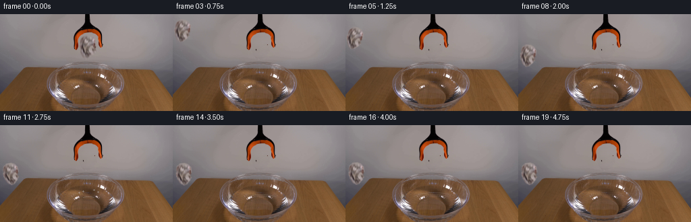
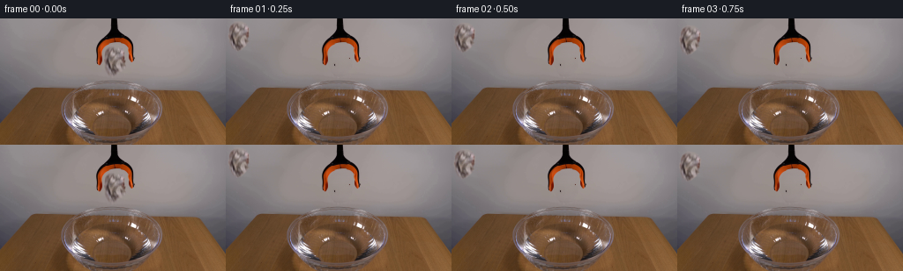

CODING AGENTS AS PIXEL WORLD MODELS
traex/GPT-5.6-Sol · 0134
点击播放 · 原生 RGB 像素
逐轮保存的候选
回放视频、检查图与代码变化。
每份候选均可单独播放。实际图片检查记录在下方工具轨迹中。
候选 01播放与检查图
点击播放 · 原生 RGB 像素


展开代码变化
--- 上一保存版本
+++ 本次保存版本
@@ -0,0 +1,188 @@
+from pathlib import Path
+import cv2
+import numpy as np
+from PIL import Image
+import artifact_io
+
+# Analytic locked-camera animation built only from the supplied first photograph.
+ROOT = Path(__file__).resolve().parent
+src = np.asarray(Image.open(ROOT / "first_frame.png").convert("RGB"), dtype=np.uint8)
+H, W = src.shape[:2]
+
+
+def soft_mask(mask, sigma=0.65):
+ m = mask.astype(np.float32)
+ if sigma:
+ m = cv2.GaussianBlur(m, (0, 0), sigma)
+ return np.clip(m, 0.0, 1.0)
+
+
+def composite(dst, rgb, alpha):
+ a = alpha[..., None].astype(np.float32)
+ return np.clip(dst.astype(np.float32) * (1.0-a) + rgb.astype(np.float32) * a, 0, 255).astype(np.uint8)
+
+
+# The crumpled sheet is between the open jaws. Its silhouette is deliberately
+# asymmetric: retaining the true photographed folds is much more convincing
+# than redrawing a white ball.
+paper_poly = np.array([
+ [125,31], [133,31], [138,34], [141,38], [141,45], [139,50],
+ [140,54], [136,59], [132,63], [127,64], [123,61], [121,57],
+ [119,53], [118,47], [119,41], [120,35]
+], np.int32)
+paper_mask = np.zeros((H, W), np.uint8)
+cv2.fillPoly(paper_mask, [paper_poly], 255)
+# Keep the orange fingers from leaking into the extracted sheet.
+hsv = cv2.cvtColor(src, cv2.COLOR_RGB2HSV)
+orange = ((hsv[...,0] < 18) & (hsv[...,1] > 105) & (hsv[...,2] > 75))
+paper_mask[orange] = 0
+paper_alpha_full = soft_mask(paper_mask / 255.0, .62)
+
+# Produce the wall that was hidden by the paper. On each scan line it is
+# reconstructed from wall samples immediately to either side; this preserves
+# the camera's natural vertical illumination gradient and fine sensor grain.
+clean = src.copy().astype(np.float32)
+remove_mask = np.zeros((H, W), np.uint8)
+cv2.fillPoly(remove_mask, [np.array([
+ [123,30],[137,30],[143,36],[143,55],[137,63],[129,67],[121,63],[116,54],[116,38]
+], np.int32)], 255)
+# Never remove the clearly orange or near-black grabber hardware.
+dark_hardware = (np.max(src, axis=2) < 58)
+remove_mask[orange | dark_hardware] = 0
+rng = np.random.default_rng(134)
+for y in range(27, 69):
+ left = src[y, 96:108].astype(np.float32)
+ right = src[y, 153:166].astype(np.float32)
+ c0 = np.median(left, axis=0)
+ c1 = np.median(right, axis=0)
+ xs = np.where(remove_mask[y] > 0)[0]
+ for x in xs:
+ q = np.clip((x-108)/45., 0, 1)
+ col = c0*(1-q) + c1*q
+ # Very restrained deterministic grain avoids a synthetic flat patch.
+ col += rng.normal(0, .55, 3)
+ clean[y,x] = col
+clean = np.clip(clean,0,255).astype(np.uint8)
+# Feather only the reconstruction boundary into the untouched photograph.
+rm = soft_mask(remove_mask/255., 1.15)
+clean = composite(src, clean, rm)
+
+# Crop containing just the photographed paper and its alpha silhouette.
+x0,y0,x1,y1 = 115,28,146,68
+paper_rgb = src[y0:y1, x0:x1].copy()
+paper_a = paper_alpha_full[y0:y1, x0:x1].copy()
+center_local = np.array([130-x0, 47.5-y0], np.float32)
+
+
+def transform_paper(angle, scale, cx, cy, wet=0.0):
+ """Return a full-frame rotated paper cutout and alpha matte."""
+ ph,pw = paper_a.shape
+ M = cv2.getRotationMatrix2D(tuple(center_local), angle, scale)
+ M[0,2] += cx - 130.0
+ M[1,2] += cy - 47.5
+ warped_rgb = cv2.warpAffine(paper_rgb, M, (W,H), flags=cv2.INTER_CUBIC,
+ borderMode=cv2.BORDER_CONSTANT, borderValue=(0,0,0))
+ warped_a = cv2.warpAffine(paper_a, M, (W,H), flags=cv2.INTER_CUBIC,
+ borderMode=cv2.BORDER_CONSTANT, borderValue=0)
+ warped_a = np.clip(warped_a,0,1)
+ if wet > 0:
+ # Water climbs into the lower folds. It lowers value and slightly cools
+ # the paper while preserving the original creases and highlights.
+ yy = np.arange(H, dtype=np.float32)[:,None]
+ waterline = cy + 1.5
+ lower = np.clip((yy-waterline+6.)/12., 0, 1) * wet
+ lower = lower[...,None]
+ cool = warped_rgb.astype(np.float32)
+ target = cool * np.array([.73,.76,.80],np.float32) + np.array([4,5,7])
+ warped_rgb = np.clip(cool*(1-lower) + target*lower,0,255).astype(np.uint8)
+ return warped_rgb, warped_a
+
+
+def ellipse_layer(frame, cx, cy, axes, color, opacity, start=0, end=360, thick=1):
+ lay = np.zeros_like(frame)
+ ma = np.zeros((H,W), np.uint8)
+ cv2.ellipse(lay, (int(round(cx)),int(round(cy))),
+ (max(1,int(round(axes[0]))),max(1,int(round(axes[1])))),
+ 0, start, end, color, thick, cv2.LINE_AA)
+ cv2.ellipse(ma, (int(round(cx)),int(round(cy))),
+ (max(1,int(round(axes[0]))),max(1,int(round(axes[1])))),
+ 0, start, end, 255, thick, cv2.LINE_AA)
+ # Restrict disturbance to the visible interior of the bowl.
+ Y,X=np.ogrid[:H,:W]
+ water = (((X-127)/54.)**2 + ((Y-108)/18.)**2 < 1.0) & (Y>91)
+ a = (ma.astype(np.float32)/255.) * opacity * water
+ return composite(frame, lay, a)
+
+
+# Quarter-second samples. Initial hesitation communicates release; acceleration
+# then follows gravity. Impact is around frame 10, followed by one damped bob.
+centers_y = [47.5,48.0,49.5,52.5,57.0,63.5,71.5,80.5,89.5,97.0,
+ 102.5,100.0,98.7,99.6,100.4,99.8,99.4,99.8,100.0,99.8]
+centers_x = [130.0,130.0,129.8,129.4,128.9,128.5,128.4,128.8,129.6,130.5,
+ 131.0,131.4,131.7,131.8,131.7,131.5,131.4,131.5,131.6,131.6]
+angles = [0,0,-2,-5,-8,-11,-12,-9,-4,3,8,11,10,8,7,6,6,7,7,7]
+scales = [1,1,1,.995,.99,.985,.98,.975,.97,.965,.96,.96,.965,.97,.97,.97,.97,.97,.97,.97]
+
+frames=[]
+for i in range(20):
+ if i == 0:
+ frames.append(src.copy())
+ continue
+ f=clean.copy()
+ cx,cy=centers_x[i],centers_y[i]
+
+ # Soft contact shadow is fixed to the water plane and strengthens as the
+ # falling object approaches it. It remains subtle after the paper floats.
+ proximity=np.clip((cy-62)/38,0,1)
+ shadow=np.zeros((H,W),np.uint8)
+ cv2.ellipse(shadow,(int(cx),108),(int(5+9*proximity),int(1+2*proximity)),0,0,360,255,-1,cv2.LINE_AA)
+ shadow=cv2.GaussianBlur(shadow,(0,0),1.8)
+ waterclip=np.zeros((H,W),np.float32)
+ Y,X=np.ogrid[:H,:W]
+ waterclip[(((X-127)/53.)**2+((Y-108)/17.)**2<1)&(Y>94)]=1
+ shalpha=shadow.astype(np.float32)/255 * waterclip * (.04+.10*proximity)
+ dark=(f.astype(np.float32)*np.array([.72,.74,.76])).astype(np.uint8)
+ f=composite(f,dark,shalpha)
+
+ # Concentric, horizontally compressed capillary waves after contact.
+ if i >= 10:
+ age=i-10
+ for lag,base_op in ((0,.34),(2,.22),(4,.14)):
+ a=age-lag
+ if a>=0:
+ rx=4.0+a*4.7
+ ry=1.25+a*1.05
+ fade=max(0.0,1-a/11.)*base_op
+ f=ellipse_layer(f,131,108,(rx,ry),(202,202,205),fade,195,345,1)
+ f=ellipse_layer(f,131,109,(rx,ry),(69,60,58),fade*.50,15,175,1)
+
+ wet=np.clip((i-9)/3.,0,1)
+ prgb,pa=transform_paper(angles[i],scales[i],cx,cy,wet)
+ f=composite(f,prgb,pa)
+
+ # Brief crown splash: tiny arcs and ballistic droplets, never a cartoonish
+ # explosion. At four fps it is visible for only three samples.
+ if i in (10,11,12):
+ age=i-10
+ lay=np.zeros_like(f); ma=np.zeros((H,W),np.uint8)
+ op=[.64,.43,.20][age]
+ col=(194,193,195)
+ if age==0:
+ cv2.ellipse(lay,(131,108),(12,5),0,197,343,col,1,cv2.LINE_AA)
+ cv2.ellipse(ma,(131,108),(12,5),0,197,343,255,1,cv2.LINE_AA)
+ pts=[(119,103,1),(142,102,1),(137,99,1)]
+ elif age==1:
+ pts=[(117,100,1),(145,99,1),(139,96,1),(123,98,1)]
+ else:
+ pts=[(116,103,1),(146,102,1)]
+ for px,py,rr in pts:
+ cv2.circle(lay,(px,py),rr,col,-1,cv2.LINE_AA)
+ cv2.circle(ma,(px,py),rr,255,-1,cv2.LINE_AA)
+ f=composite(f,lay,ma.astype(np.float32)/255*op)
+
+ frames.append(f)
+
+frames=np.stack(frames).astype(np.uint8)
+# Contract invariant: source photograph is reproduced byte-for-byte.
+frames[0]=src
+artifact_io.save(frames, ROOT)
候选 02播放与检查图
点击播放 · 原生 RGB 像素

展开代码变化
--- 上一保存版本
+++ 本次保存版本
@@ -46,9 +46,10 @@
cv2.fillPoly(remove_mask, [np.array([
[123,30],[137,30],[143,36],[143,55],[137,63],[129,67],[121,63],[116,54],[116,38]
], np.int32)], 255)
-# Never remove the clearly orange or near-black grabber hardware.
-dark_hardware = (np.max(src, axis=2) < 58)
-remove_mask[orange | dark_hardware] = 0
+# Preserve the orange jaw faces. The near-black marks inside this little area
+# are paper creases (not hardware), so they must be reconstructed away too or
+# a stationary "ghost" of the sheet would remain on the wall.
+remove_mask[orange] = 0
rng = np.random.default_rng(134)
for y in range(27, 69):
left = src[y, 96:108].astype(np.float32)
@@ -114,18 +115,19 @@
return composite(frame, lay, a)
-# Quarter-second samples. Initial hesitation communicates release; acceleration
-# then follows gravity. Impact is around frame 10, followed by one damped bob.
-centers_y = [47.5,48.0,49.5,52.5,57.0,63.5,71.5,80.5,89.5,97.0,
- 102.5,100.0,98.7,99.6,100.4,99.8,99.4,99.8,100.0,99.8]
-centers_x = [130.0,130.0,129.8,129.4,128.9,128.5,128.4,128.8,129.6,130.5,
- 131.0,131.4,131.7,131.8,131.7,131.5,131.4,131.5,131.6,131.6]
-angles = [0,0,-2,-5,-8,-11,-12,-9,-4,3,8,11,10,8,7,6,6,7,7,7]
-scales = [1,1,1,.995,.99,.985,.98,.975,.97,.965,.96,.96,.965,.97,.97,.97,.97,.97,.97,.97]
+# Quarter-second samples. Three establishing samples are followed by a quick,
+# visibly accelerating real-time fall. Impact is around frame 7, followed by a
+# small buoyant rebound and one damped bob.
+centers_y = [47.5,47.5,47.5,49.0,54.5,65.5,82.5,100.5,102.0,99.4,
+ 98.6,99.5,100.3,99.8,99.4,99.7,100.0,99.8,99.7,99.8]
+centers_x = [130.0,130.0,130.0,129.8,129.2,128.6,128.7,130.2,131.0,131.5,
+ 131.8,131.9,131.8,131.6,131.5,131.5,131.6,131.6,131.6,131.6]
+angles = [0,0,0,-1,-4,-9,-12,-4,7,11,10,8,7,6,6,6,7,7,7,7]
+scales = [1,1,1,1,.995,.985,.975,.965,.96,.96,.965,.97,.97,.97,.97,.97,.97,.97,.97,.97]
frames=[]
for i in range(20):
- if i == 0:
+ if i <= 2:
frames.append(src.copy())
continue
f=clean.copy()
@@ -145,8 +147,8 @@
f=composite(f,dark,shalpha)
# Concentric, horizontally compressed capillary waves after contact.
- if i >= 10:
- age=i-10
+ if i >= 7:
+ age=i-7
for lag,base_op in ((0,.34),(2,.22),(4,.14)):
a=age-lag
if a>=0:
@@ -156,14 +158,21 @@
f=ellipse_layer(f,131,108,(rx,ry),(202,202,205),fade,195,345,1)
f=ellipse_layer(f,131,109,(rx,ry),(69,60,58),fade*.50,15,175,1)
- wet=np.clip((i-9)/3.,0,1)
+ wet=np.clip((i-6)/3.,0,1)
prgb,pa=transform_paper(angles[i],scales[i],cx,cy,wet)
f=composite(f,prgb,pa)
+ # A low-opacity foreground arc places the lower wet edge behind the glass
+ # bowl rather than pasted on top of it.
+ rim=np.zeros_like(f); rima=np.zeros((H,W),np.uint8)
+ cv2.ellipse(rim,(127,109),(53,25),0,18,162,(194,188,187),1,cv2.LINE_AA)
+ cv2.ellipse(rima,(127,109),(53,25),0,18,162,255,1,cv2.LINE_AA)
+ f=composite(f,rim,(rima.astype(np.float32)/255)*pa*.22)
+
# Brief crown splash: tiny arcs and ballistic droplets, never a cartoonish
# explosion. At four fps it is visible for only three samples.
- if i in (10,11,12):
- age=i-10
+ if i in (7,8,9):
+ age=i-7
lay=np.zeros_like(f); ma=np.zeros((H,W),np.uint8)
op=[.64,.43,.20][age]
col=(194,193,195)
候选 03播放与检查图
可观测工具轨迹
实际执行的命令与返回图片。
命令 1exit 0
/bin/bash -lc "cat GENERATION_RULES.md && printf '\\n--- PROMPT ---\\n' && cat prompt.txt"
命令 2exit 0
/bin/bash -lc "find . -maxdepth 2 -type f -printf '%p %s bytes\\n' | sort"
命令 3exit 0
/bin/bash -lc "python3 - <<'PY'
from PIL import Image
im=Image.open('first_frame.png')
print(im.mode, im.size)
print(im.getextrema())
PY"命令 4exit 0
/bin/bash -lc "python3 - <<'PY'
import cv2, numpy as np
from PIL import Image
im=np.array(Image.open('first_frame.png'))
h,w,_=im.shape
# kmeans colors
z=im.reshape(-1,3).astype(np.float32)
crit=(cv2.TERM_CRITERIA_EPS+cv2.TERM_CRITERIA_MAX_ITER,50,.2)
_,lab,cen=cv2.kmeans(z,12,None,crit,10,cv2.KMEANS_PP_CENTERS)
lab=lab.ravel(); cen=cen.astype(int)
for i,c in sorted(enumerate(cen),key=lambda x:-np.sum(lab==x[0])):
ys,xs=np.where(lab.reshape(h,w)==i)
print(i, np.sum(lab==i), tuple(c), 'x',round(xs.mean(),1),round(xs.min()),round(xs.max()),'y',round(ys.mean(),1),round(ys.min()),round(ys.max()))
# ascii dominant kmean each 8x6 block mapping by luminance hue manually symbols ids
L=lab.reshape(h,w)
for y in range(0,h,6):
print(''.join(str(np.bincount(L[y:y+6,x:x+8].ravel(),minlength=12).argmax())[-1] for x in range(0,w,8)))
PY"命令 5exit 0
/bin/bash -lc "python3 - <<'PY'
from PIL import Image
import numpy as np, cv2
im=np.array(Image.open('first_frame.png'))
# Character classify each 2x2 avg in x64:192 y0:140
for y in range(0,140,3):
s=''
for x in range(55,205,3):
a=im[y:y+3,x:x+3].mean((0,1)); r,g,b=a; mx=max(a); mn=min(a)
if mx<35: c='#'
elif mx<65: c='@'
elif mx<90: c='O'
elif mx<110: c='o'
elif mx<130: c=':'
elif mx<150: c='.'
elif mx<170: c=' '
elif mn>190: c='W'
elif r>b*1.5 and r>g*1.4: c='X'
elif r>b*1.35 and r>g*1.2: c='x'
elif b>r*1.15: c='~'
else: c='+'
s+=c
print(f'{y:03}',s)
PY"命令 6exit 0
/bin/bash -lc "python3 - <<'PY'
import cv2, numpy as np
from PIL import Image
im=cv2.imread('first_frame.png'); hsv=cv2.cvtColor(im,cv2.COLOR_BGR2HSV)
# selected HSV masks stats and components
specs={'orange':((0,100,60),(18,255,255)),'dark':((0,0,0),(180,255,45)),'light':((0,0,180),(180,70,255)),'blue':((85,25,50),(130,255,255))}
for name,(lo,hi) in specs.items():
m=cv2.inRange(hsv,np.array(lo),np.array(hi)); n,l,st,c=cv2.connectedComponentsWithStats(m)
print('\\n',name,'total',np.sum(m>0))
for x,y,w,h,a in sorted(st[1:],key=lambda s:-s[4])[:15]: print(' ',x,y,w,h,a)
# Print raw RGB at grid around object
rgb=cv2.cvtColor(im,cv2.COLOR_BGR2RGB)
for y in range(0,135,5):
print('\\ny',y,end=' ')
for x in range(70,191,5):
r,g,b=rgb[y,x]
# compressed classify
if max(r,g,b)<35:c='K'
elif max(r,g,b)<65:c='D'
elif max(r,g,b)<90:c='d'
elif min(r,g,b)>180:c='W'
elif max(r,g,b)>165 and max(r,g,b)-min(r,g,b)<25:c='L'
elif r>g*1.5 and r>b*1.7:c='X'
elif r>g*1.3 and r>b*1.4:c='x'
elif b>r*1.2:c='B'
elif max(r,g,b)<115:c='o'
elif max(r,g,b)<145:c='.'
else:c=' '
print(c,end='')
PY"命令 7exit 0
/bin/bash -lc "python3 - <<'PY'
from PIL import Image
import numpy as np, cv2
im=np.array(Image.open('first_frame.png'))
hsv=cv2.cvtColor(im,cv2.COLOR_RGB2HSV)
# classify x100:161 every pixel, y0:70. bg local interpolated median at each y from x80:100 and 161:181
for y in range(0,70):
bg=np.median(np.r_[im[y,80:100],im[y,161:181]].reshape(-1,3),axis=0)
s=''
for x in range(100,161):
r,g,b=map(int,im[y,x]); H,S,V=map(int,hsv[y,x]); diff=np.linalg.norm(im[y,x].astype(float)-bg)
if V<40:c='#'
elif V<65:c='@'
elif V<85:c='O'
elif H<18 and S>120 and r>100:c='X'
elif H<25 and S>70 and r>110:c='x'
elif V>180:c='W'
elif diff<12:c=' '
elif diff<25:c='.'
elif V<105:c='o'
elif V<125:c=':'
elif V<145:c='+'
elif V<165:c='-'
else:c='*'
s+=c
print(f'{y:02} {s}')
PY"命令 8exit 0
/bin/bash -lc "python3 - <<'PY'
import cv2, numpy as np
from PIL import Image
im=np.array(Image.open('first_frame.png')); hsv=cv2.cvtColor(im,cv2.COLOR_RGB2HSV)
# Strong orange identify exact runs within central object (H OpenCV 0-15, S)
m=(hsv[:,:,0]<17)&(hsv[:,:,1]>95)&(hsv[:,:,2]>65)
# dark runs
k=(hsv[:,:,2]<75)
for y in range(0,70):
runs=[]
for mask,ch in [(m,'X'),(k,'#')]:
xs=np.where(mask[y,90:170])[0]+90
rr=[]
if len(xs):
sp=np.split(xs,np.where(np.diff(xs)>1)[0]+1); rr=[f'{a[0]}-{a[-1]}' for a in sp if len(a)]
runs.append(ch+','.join(rr))
print(y,' '.join(runs))
PY"命令 9exit 0
/bin/bash -lc 'cat artifact_io.py'
命令 10exit 0
/bin/bash -lc "python3 - <<'PY'
import cv2,numpy as np
im=cv2.imread('first_frame.png')
g=cv2.cvtColor(im,cv2.COLOR_BGR2GRAY)
for p in [dict(dp=1,minDist=20,param1=80,param2=15,minRadius=15,maxRadius=70),dict(dp=1,minDist=20,param1=40,param2=12,minRadius=15,maxRadius=70)]:
c=cv2.HoughCircles(g,cv2.HOUGH_GRADIENT,**p)
print(c[0].round().astype(int)[:20] if c is not None else None)
# edge density every bbox area, rows central
ed=cv2.Canny(g,50,100)
for y in range(65,141,5):
xs=np.where(ed[y]>0)[0]
print(y, [(a[0],a[-1]) for a in np.split(xs,np.where(np.diff(xs)>3)[0]+1) if len(a)>=2])
PY"命令 11exit 0
/bin/bash -lc "python3 - <<'PY'
from PIL import Image
import numpy as np
im=np.array(Image.open('first_frame.png'))
for y in range(25,65,3):
print('\\ny=',y)
for x in range(116,148,4): print(x,tuple(im[y,x]),end=' ')
PY"命令 12exit 0
/bin/bash -lc "cat > generate.py <<'PY'
from pathlib import Path
import cv2
import numpy as np
from PIL import Image
import artifact_io
# Analytic locked-camera animation built only from the supplied first photograph.
ROOT = Path(__file__).resolve().parent
src = np.asarray(Image.open(ROOT / \"first_frame.png\").convert(\"RGB\"), dtype=np.uint8)
H, W = src.shape[:2]
def soft_mask(mask, sigma=0.65):
m = mask.astype(np.float32)
if sigma:
m = cv2.GaussianBlur(m, (0, 0), sigma)
return np.clip(m, 0.0, 1.0)
def composite(dst, rgb, alpha):
a = alpha[..., None].astype(np.float32)
return np.clip(dst.astype(np.float32) * (1.0-a) + rgb.astype(np.float32) * a, 0, 255).astype(np.uint8)
# The crumpled sheet is between the open jaws. Its silhouette is deliberately
# asymmetric: retaining the true photographed folds is much more convincing
# than redrawing a white ball.
paper_poly = np.array([
[125,31], [133,31], [138,34], [141,38], [141,45], [139,50],
[140,54], [136,59], [132,63], [127,64], [123,61], [121,57],
[119,53], [118,47], [119,41], [120,35]
], np.int32)
paper_mask = np.zeros((H, W), np.uint8)
cv2.fillPoly(paper_mask, [paper_poly], 255)
# Keep the orange fingers from leaking into the extracted sheet.
hsv = cv2.cvtColor(src, cv2.COLOR_RGB2HSV)
orange = ((hsv[...,0] < 18) & (hsv[...,1] > 105) & (hsv[...,2] > 75))
paper_mask[orange] = 0
paper_alpha_full = soft_mask(paper_mask / 255.0, .62)
# Produce the wall that was hidden by the paper. On each scan line it is
# reconstructed from wall samples immediately to either side; this preserves
# the camera's natural vertical illumination gradient and fine sensor grain.
clean = src.copy().astype(np.float32)
remove_mask = np.zeros((H, W), np.uint8)
cv2.fillPoly(remove_mask, [np.array([
[123,30],[137,30],[143,36],[143,55],[137,63],[129,67],[121,63],[116,54],[116,38]
], np.int32)], 255)
# Never remove the clearly orange or near-black grabber hardware.
dark_hardware = (np.max(src, axis=2) < 58)
remove_mask[orange | dark_hardware] = 0
rng = np.random.default_rng(134)
for y in range(27, 69):
left = src[y, 96:108].astype(np.float32)
right = src[y, 153:166].astype(np.float32)
c0 = np.median(left, axis=0)
c1 = np.median(right, axis=0)
xs = np.where(remove_mask[y] > 0)[0]
for x in xs:
q = np.clip((x-108)/45., 0, 1)
col = c0*(1-q) + c1*q
# Very restrained deterministic grain avoids a synthetic flat patch.
col += rng.normal(0, .55, 3)
clean[y,x] = col
clean = np.clip(clean,0,255).astype(np.uint8)
# Feather only the reconstruction boundary into the untouched photograph.
rm = soft_mask(remove_mask/255., 1.15)
clean = composite(src, clean, rm)
# Crop containing just the photographed paper and its alpha silhouette.
x0,y0,x1,y1 = 115,28,146,68
paper_rgb = src[y0:y1, x0:x1].copy()
paper_a = paper_alpha_full[y0:y1, x0:x1].copy()
center_local = np.array([130-x0, 47.5-y0], np.float32)
def transform_paper(angle, scale, cx, cy, wet=0.0):
\"\"\"Return a full-frame rotated paper cutout and alpha matte.\"\"\"
ph,pw = paper_a.shape
M = cv2.getRotationMatrix2D(tuple(center_local), angle, scale)
M[0,2] += cx - 130.0
M[1,2] += cy - 47.5
warped_rgb = cv2.warpAffine(paper_rgb, M, (W,H), flags=cv2.INTER_CUBIC,
borderMode=cv2.BORDER_CONSTANT, borderValue=(0,0,0))
warped_a = cv2.warpAffine(paper_a, M, (W,H), flags=cv2.INTER_CUBIC,
borderMode=cv2.BORDER_CONSTANT, borderValue=0)
warped_a = np.clip(warped_a,0,1)
if wet > 0:
# Water climbs into the lower folds. It lowers value and slightly cools
# the paper while preserving the original creases and highlights.
yy = np.arange(H, dtype=np.float32)[:,None]
waterline = cy + 1.5
lower = np.clip((yy-waterline+6.)/12., 0, 1) * wet
lower = lower[...,None]
cool = warped_rgb.astype(np.float32)
target = cool * np.array([.73,.76,.80],np.float32) + np.array([4,5,7])
warped_rgb = np.clip(cool*(1-lower) + target*lower,0,255).astype(np.uint8)
return warped_rgb, warped_a
def ellipse_layer(frame, cx, cy, axes, color, opacity, start=0, end=360, thick=1):
lay = np.zeros_like(frame)
ma = np.zeros((H,W), np.uint8)
cv2.ellipse(lay, (int(round(cx)),int(round(cy))),
(max(1,int(round(axes[0]))),max(1,int(round(axes[1])))),
0, start, end, color, thick, cv2.LINE_AA)
cv2.ellipse(ma, (int(round(cx)),int(round(cy))),
(max(1,int(round(axes[0]))),max(1,int(round(axes[1])))),
0, start, end, 255, thick, cv2.LINE_AA)
# Restrict disturbance to the visible interior of the bowl.
Y,X=np.ogrid[:H,:W]
water = (((X-127)/54.)**2 + ((Y-108)/18.)**2 < 1.0) & (Y>91)
a = (ma.astype(np.float32)/255.) * opacity * water
return composite(frame, lay, a)
# Quarter-second samples. Initial hesitation communicates release; acceleration
# then follows gravity. Impact is around frame 10, followed by one damped bob.
centers_y = [47.5,48.0,49.5,52.5,57.0,63.5,71.5,80.5,89.5,97.0,
102.5,100.0,98.7,99.6,100.4,99.8,99.4,99.8,100.0,99.8]
centers_x = [130.0,130.0,129.8,129.4,128.9,128.5,128.4,128.8,129.6,130.5,
131.0,131.4,131.7,131.8,131.7,131.5,131.4,131.5,131.6,131.6]
angles = [0,0,-2,-5,-8,-11,-12,-9,-4,3,8,11,10,8,7,6,6,7,7,7]
scales = [1,1,1,.995,.99,.985,.98,.975,.97,.965,.96,.96,.965,.97,.97,.97,.97,.97,.97,.97]
frames=[]
for i in range(20):
if i == 0:
frames.append(src.copy())
continue
f=clean.copy()
cx,cy=centers_x[i],centers_y[i]
# Soft contact shadow is fixed to the water plane and strengthens as the
# falling object approaches it. It remains subtle after the paper floats.
proximity=np.clip((cy-62)/38,0,1)
shadow=np.zeros((H,W),np.uint8)
cv2.ellipse(shadow,(int(cx),108),(int(5+9*proximity),int(1+2*proximity)),0,0,360,255,-1,cv2.LINE_AA)
shadow=cv2.GaussianBlur(shadow,(0,0),1.8)
waterclip=np.zeros((H,W),np.float32)
Y,X=np.ogrid[:H,:W]
waterclip[(((X-127)/53.)**2+((Y-108)/17.)**2<1)&(Y>94)]=1
shalpha=shadow.astype(np.float32)/255 * waterclip * (.04+.10*proximity)
dark=(f.astype(np.float32)*np.array([.72,.74,.76])).astype(np.uint8)
f=composite(f,dark,shalpha)
# Concentric, horizontally compressed capillary waves after contact.
if i >= 10:
age=i-10
for lag,base_op in ((0,.34),(2,.22),(4,.14)):
a=age-lag
if a>=0:
rx=4.0+a*4.7
ry=1.25+a*1.05
fade=max(0.0,1-a/11.)*base_op
f=ellipse_layer(f,131,108,(rx,ry),(202,202,205),fade,195,345,1)
f=ellipse_layer(f,131,109,(rx,ry),(69,60,58),fade*.50,15,175,1)
wet=np.clip((i-9)/3.,0,1)
prgb,pa=transform_paper(angles[i],scales[i],cx,cy,wet)
f=composite(f,prgb,pa)
# Brief crown splash: tiny arcs and ballistic droplets, never a cartoonish
# explosion. At four fps it is visible for only three samples.
if i in (10,11,12):
age=i-10
lay=np.zeros_like(f); ma=np.zeros((H,W),np.uint8)
op=[.64,.43,.20][age]
col=(194,193,195)
if age==0:
cv2.ellipse(lay,(131,108),(12,5),0,197,343,col,1,cv2.LINE_AA)
cv2.ellipse(ma,(131,108),(12,5),0,197,343,255,1,cv2.LINE_AA)
pts=[(119,103,1),(142,102,1),(137,99,1)]
elif age==1:
pts=[(117,100,1),(145,99,1),(139,96,1),(123,98,1)]
else:
pts=[(116,103,1),(146,102,1)]
for px,py,rr in pts:
cv2.circle(lay,(px,py),rr,col,-1,cv2.LINE_AA)
cv2.circle(ma,(px,py),rr,255,-1,cv2.LINE_AA)
f=composite(f,lay,ma.astype(np.float32)/255*op)
frames.append(f)
frames=np.stack(frames).astype(np.uint8)
# Contract invariant: source photograph is reproduced byte-for-byte.
frames[0]=src
artifact_io.save(frames, ROOT)
PY
python3 generate.py
python3 - <<'PY'
import numpy as np
from PIL import Image
z=np.load('pixels.npz')['pixels']
a=np.array(Image.open('first_frame.png'))
f=np.array(Image.open('frames/00.png'))
print('pixels',z.shape,z.dtype,'first exact',np.array_equal(a,f))
for i in [0,1,4,8,10,12,16,19]:
im=np.array(Image.open(f'frames/{i:02}.png'))
print(i, im.shape, im.dtype, np.mean(np.abs(im.astype(int)-a.astype(int))),np.sum(np.any(im"'!=a,axis=2)))
PY'命令 13exit 0
/bin/bash -lc "python3 generate.py && python3 - <<'PY'
from PIL import Image
import numpy as np, os
frames=np.stack([np.array(Image.open(f'frames/{i:02}.png')) for i in range(20)])
src=np.array(Image.open('first_frame.png'))
print(frames.shape,frames.dtype,'exact',np.array_equal(frames[0],src),'still exact',np.array_equal(frames[1],src),np.array_equal(frames[2],src))
print('motion pixel deltas:',[int(np.any(frames[i]"'!=frames[i-1],2).sum()) for i in range(1,20)])
print('"'outputs',[(f,os.path.getsize(f)) for f in ['pixels.npz','index.html','inspection.png','transition_check.png']])
PY
python3 -m py_compile generate.py"保存候选 3 份；完成命令 13 次；可验证图片返回 0 张。原始 API 响应与完整日志保留在本地。